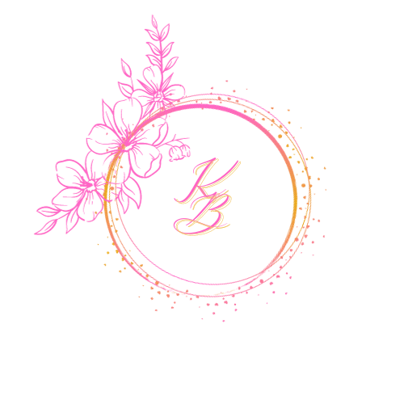
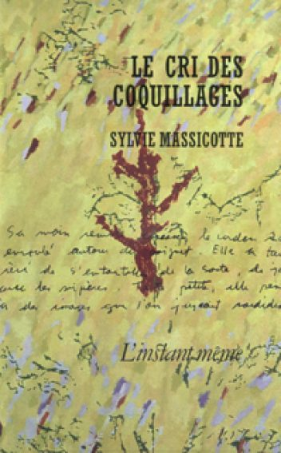

Kim Blanchard
Carnet d'écriture
Recueil de textes
Fabrique
Sommaire
Le commencement
2010
Soleil #
Jaune
Parfois orange
Chaud
Brillant
Aveuglant
Une étoile
Qui ne peut être sanglante
Telle une force divine
Il nous attire
De cire, personnellement
J’aimerais qu’il soit
Toujours là, toujours présent
Comme un ami, le meilleur
Partout, il nous suit
jusqu’à miami
Qui est-ce?
Difficile
Chaud
Brillant
Unique
Une étoile
Apprenti
2011
Pour vous #

Bonjour Mme Massicotte,
Ma lettre ne sera ni la première ni la dernière que vous lirez aujourd’hui. Par contre, je vous informe que j’ai choisi de lire, comme la plupart des étudiants, le recueil de nouvelles Le cris des coquillages. J’ai choisi ce recueil, à cause de son résumé1:
Un désert, un rivage, la sortie de l’école, une naissance, le retour dans un paysage d’enfance : en certains lieux, en certaines circonstances, le monde s’étale et ressemble à ce qu’il aurait pu être. L’heure est aux déchéances, l’on se penche sur un coquillage en cherchant à déchiffrer ce qu’un burin liquide y a gravé, à lire ce qui fait défaut au fond de soi, à entendre l’oracle à la voix salée. Sylvie Massicotte se livre dans Le cri des coquillages à la spirale des vides et des pleins, où l’imagination adopte une figure matricielle.
L’idée qu’un objet comme un coquillage qui apporte bonheur et calme et l’écriture qui nous transporte vers un univers de tristesse, d’amertume et de refoulement m’a séduit. À travers le recueil, il y a deux histoires qui m’ont particulièrement marquées, deux nouvelles différentes qui m’ont toute autant touché, soit Monsieur et L’ours. Dans la première, c’est la relation entre l’homme et le chien qui m’a émue, car la présence de l’animal apporte ce que l’homme avait oublié, perdu. Le sentiment d’avoir retrouvé un vieil ami après une longue absence est venu me chercher au plus profond de moi. Tout comme dans la seconde histoire, le lien presque distant entre le père et le fils qui malgré les apparences ont l’air d’être très proche, apporte un petit quelque chose de bien. Deux histoires qui se lit facilement et où l’on comprend très simplement les intentions, les pensées et les actions des personnages. Malgré un registre de langue différent et une vie complètement différente, on s’aperçoit qu’ils sont tous dans un remaniement, un passage avide de leur vie.
Ne voyez pas dans ma lettre une prétention quelconque. Je sais que pour critiquer ou aimer un livre, il faut lire plus d’un livre d’un auteur et ce pour n’importe lequel d’entre eux. Je suis désolé si ma lettre n’apporte pas ce que à quoi vous vous attendiez. On dirait que les commentaires que j’ai exprimés à la table ronde ne veulent être transcrits dans cette lettre. Une lettre est dure à écrire, car il faut trouver les bons mots pour s’exprimer.
Au plaisir!
-
L’Instant Même. (s.d.). Le cris des coquillage ↩︎
2011
Cheminement
Toute petite,
Effacée,
Oubliée,
Plus personne ne me voyait.
À voix basse,
À vos oreilles,
Je murmurais.
Éloignée,
Repoussée,
À toujours être absente,
J’ai fini par m’isoler.
Solitaire,
Je gardais ma peine et ma douleur
Enfoui au fond de moi.
De plus en plus je périssais,
Je fanais,
Je disparaissais de vos vies
En ne laissant qu’une légère impression derrière vous.
Lorsque mon corps fut trop plein.
Que ma misère intérieure déborda enfin.
Je vous est surpris.
Un cri
Peut-être trop fort
A surgit de ma petite personne
Votre amitié
Votre fausse amitié
Je n’en veux pas
Laissez-moi crier ma peine
Laissez-moi me briser.
Ce n’est pas vous
Qui, longtemps refusiez
De parler, de vous confier.
Je me tue en vous le criant,
Je me tue en pleurant,
Devant vous.
Puissiez-vous jamais connaître ce que j’ai vécu.
Je vous dis adieu
Je quitte vos vies
Aussi pitoyable qu’ils sont.
Jamais vous ne me reverrez.
J’ai réussi,
Après un long cheminement
À trouver ma voie
Ma vraie personnalité
Ma vie.
Je devrai vous dire merci
Mais je ne peux
Car malgré cette étape
Les séquelles que vous m’avez causées
Me seront à jamais inoubliable.
Débutant
mi-2011
Décision #
Depuis plusieurs jours, je pense à cette situation. Je pèse le pour et le contre. J’essaie de me changer les idées, mais cela ne fonctionne pas.
Quand j’ai compris enfin ce qui se passait réellement, j’ai ressentie plusieurs émotions différentes. Autant je voulais hurler ma rage, autant l’instant d’après, j’avais envie de pleurer comme une fontaine. Maintenant que j’ai repris mes esprits, je réfléchie à toutes mes options possibles.
Dans ma tête, mes idées se bousculent et s’entrechoquent. Je ne sais plus quoi faire, je suis totalement perdue.
Isolée avec mon iPod dans ma chambre, ma mère a remarqué mon trouble et est venu me voir. En la voyant entrer dans ma chambre comme lorsque j’étais enfant, l’envie de pleurer et de me confier m’a submergé. Ma mère m’a écoutée, puis elle s’est levée et m’a dit : C’est ton choix.
À ce moment-là, mon choix était fait. J’ai compris.
Même si le choix était déchirant Même si cela risquait d’être douloureux Même si ça risque de me faire du mal au plus haut point
Je vais le quitter et refaire ma vie sans lui.
Intermédiaire
2012
Sueurs #
La nuit. Une nuit noire. Je me sens prise. Je me sens seule. Que quelqu’un m’aide. Pourquoi n’y a-t-il personne? Je me sens toute seule encore une fois. Je sens autour de moi le monde bouger. Par pitié, aidez-moi, ne me laissez pas ici. Plus un bruit, plus un son autour de moi maintenant. Je panique d’être seule, je délire, je deviens paranoïaque. Pourquoi m’avez-vous laissée seule, alors que je vous aide toujours? J’entends au loin une personne qui m’appelle, qui crie mon nom. Je voudrai y répondre, mais je ne peux pas, j’ai la bouche cousue. Seule. J’essaye alors d’aller vers la voix, mais mes jambes refusent de bouger. Elles aussi ne veulent pas faire ce que je leur demande, car elles sont collées. Seule. J’entends encore la voix, elle se rapproche bizarrement de moi, comme si elle me voyait. Si tu es là, fais cesser ce calvaire, il fait si noir. Je me sens isolée, seule. Je ne peux ni bouger ni parler. Je te sens enfin, tu me touches. Tu me secous. Cesse de me secouer comme ça! Arrête de me faire mal! Je me sens paniquée encore plus. Qu’est-ce qui ce passe? Je me sens plus légère. Je comprends enfin. Je ne suis pas seule. Ces simples mots qui m’appelaient et me paniquaient, cette personne qui m’agrippait, les deux me demandaient de me réveiller.
2014
Étrangère #
Elle pensait qu’elle serait heureuse
Elle pensait pouvoir changer de vie en changeant de ville
Elle pensait s’habituer à la rapidité de la métropole
Elle pensait qu’en se promenant dans les rues et qu’en visitant la ville aux cents clochers elle se sentirait chez elle
Mais ce n’est pas le cas.
1 700 000
Un million sept cent mille personnes y vivent et pourtant, elle se sent seul.
Elle regrette son départ.
Elle regrettre sa petite ville.
Elle se sent perdue, invisible, décallée.
Trop grand
Trop coincé
Trop différent
Trop trop
Mais elle ne peut partir, revenir
Alors, elle attend.
Elle erre comme un âme en peine.
Une âme sur un million Perdue Décalée Étrangère
2017
Revenir #
Et si on retournait à la maison. Elle avait dit cela, en regardant le coucher du soleil, assise sur le remblai de ciment, comme si c’était quelque chose d’extrêmement banale à dire. Émilie n’en croyait pas ces oreilles. Des larmes lui remplirent les yeux. Pour vrai? Mmmh… Elle te manque, non? Émilie n’arrivait toujours pas à y croire. Elle se retourna donc vers son amie et l’a fit sourire tendrement. Il est temps, non? Les larmes d’Émilie commencèrent à couler. Après cinq ans à vagabonder ici et là à travers le pays, elles allaient rentrer à la maison. Ici, sur cette plage, elle lui avait dit les mots, dont Émilie attendait depuis leur départ et elle avait l’air si calme. N’as-tu pas peur? Elle se rapprocha d’Émilie et appuya sa tête sur ses épaules. Si… mais on ne peut plus continuer à voyager. On… Je… ne peux plus continuer à me cacher… Elle avait prononcé cette dernière phrase faiblement, mais Émilie l’avait comprise. elle l’a comprenait. C’était elle qui avait décidé de partir et Émilie avait décidé de l’accompagner pour qu’elle ne soit pas seule. Elles se connaissent depuis l’enfance et Émilie connait sa hantise pour la solitude. Même si elle avait décidé de partir, Émilie l’a accompagné pour qu’elle ne soit pas seule. Il était donc logique que ça soit elle qui décide de rentrer. En plus, ça va faire 5 ans depuis qu’elle est partie.
À propos
Modèle 3 pour le travail final du cours FRA3825 : Carnet d’écriture.
Crédits
Instruction : créer et éditer 1 pages Crédits
Sommaire
CC BY-NC-SA Kim Blanchard